计算机组成4-2-2:流水线的设计
第一部分：流水线数据通路的设计与实现
我们的起点，是第一部分课程中构建的单周期数据通路。流水线改造的核心，就是在五个经典阶段之间，插入“防火墙”——流水线寄存器。
1.1 切分数据通路与流水线寄存器的引入
我们将单周期数据通路按照IF, ID, EX, MEM, WB五个阶段进行切分。
（如下的RISC-V Pipelined Datapath图，但暂时忽略Branch和WB的反馈线，只考虑从左到右的数据流） 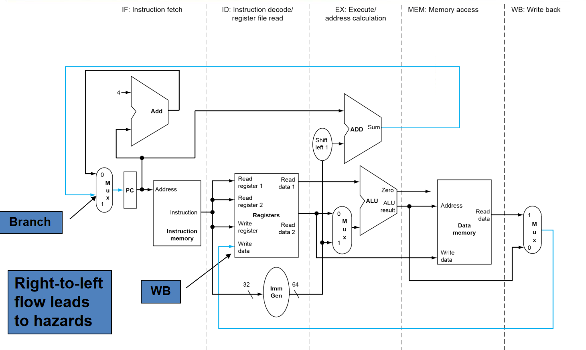
在每个阶段的边界，我们插入一组寄存器，它们的名字明确地表示了其位置：
- IF/ID寄存器：位于IF和ID阶段之间。它存储了从指令存储器中取出的完整指令和PC+4的值。
- ID/EX寄存器：位于ID和EX阶段之间。它存储了从寄存器堆读出的两个操作数，符号扩展后的立即数，指令中的rs1, rs2, rd字段，以及来自控制单元的所有控制信号。
- EX/MEM寄存器：位于EX和MEM阶段之间。它存储了ALU的计算结果，ALU的Zero标志，从ID/EX寄存器传来的要写入内存的数据（对于sd指令）和rd字段，以及相关的控制信号。
- MEM/WB寄存器：位于MEM和WB阶段之间。它存储了从数据存储器读出的数据（对于ld指令），从EX/MEM寄存器传来的ALU结果和rd字段，以及写回控制信号。
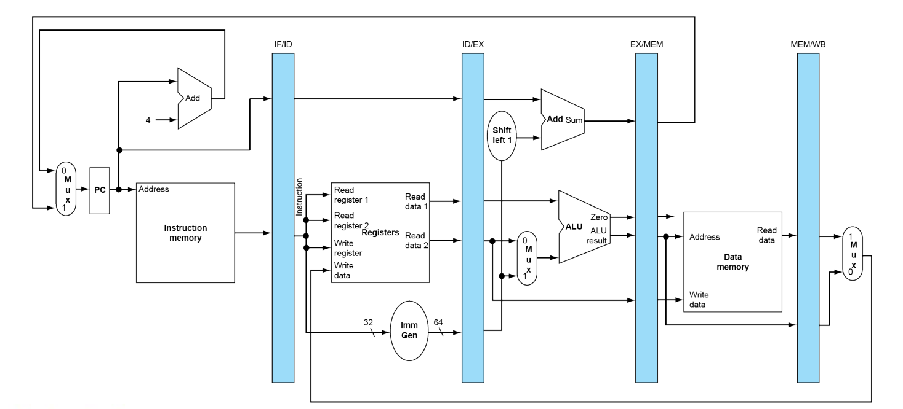
为什么流水线寄存器如此关键？
- 隔离：它们将一个大的组合逻辑路径（整个单周期数据通路）切分成了五个小的、独立的组合逻辑路径。新的时钟周期只由最长的那个阶段的延迟决定，而不是所有阶段延迟之和。
- 状态传递：它们像接力赛的接力棒，将一条指令在其生命周期中所需的所有信息（数据、控制信号、目标寄存器地址等）一级一级地向下传递。一条指令的所有相关信息必须在流水线中“结伴而行”。
1.2 流水线中的数据流：一个ld指令的旅程
让我们通过追踪一条ld指令，来直观地感受数据和控制信号是如何在流水线中流动的。
-
周期1 (IF):
- PC指向
ld指令地址，指令被读出。 - PC+4被计算。
- 在时钟上升沿，
ld指令和PC+4的值被写入IF/ID寄存器。 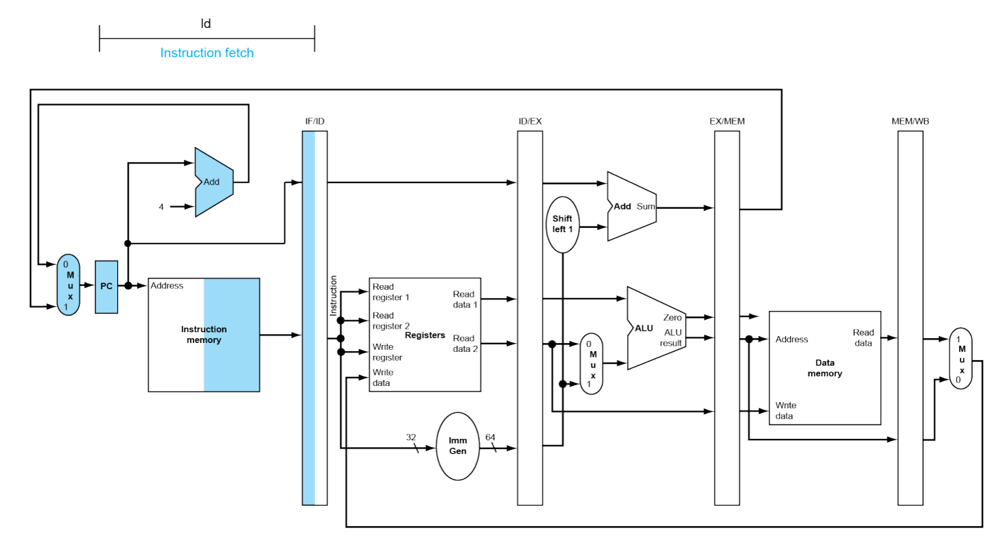
- PC指向
-
周期2 (ID):
- IF/ID寄存器中的
ld指令被译码。 - 控制单元生成
ld所需的所有控制信号（ALUSrc=1,MemRead=1,RegWrite=1,MemtoReg=1等）。 - 根据指令中的
rs1字段，从寄存器堆读出基地址。 - 立即数被符号扩展。
- 在时钟上升沿，读出的基地址、扩展后的立即数、控制信号、
rd字段等所有信息被写入ID/EX寄存器。 - 与此同时，下一条指令正在IF阶段被取出。 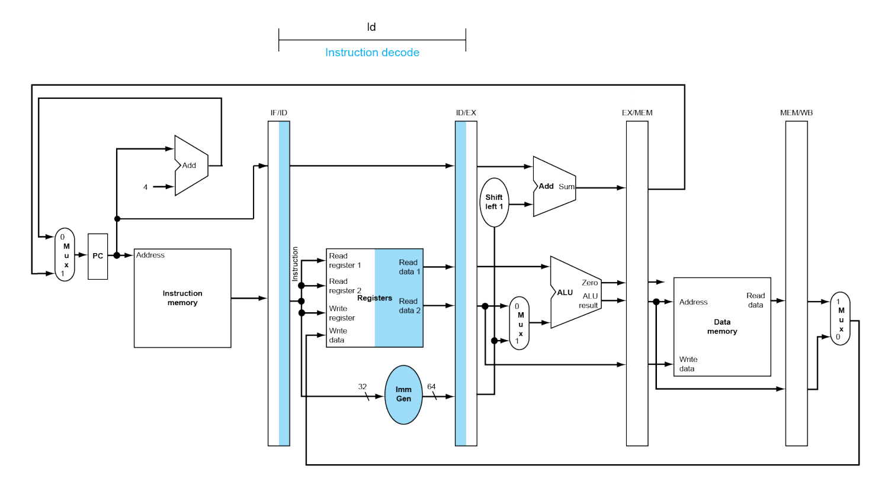
- IF/ID寄存器中的
-
周期3 (EX):
- ALU从ID/EX寄存器中获取基地址和立即数。
ALUSrc控制MUX选择立即数作为ALU的第二个操作数。- ALU执行加法，计算出有效内存地址。
- 在时钟上升沿，计算出的地址、传来的控制信号、
rd字段等被写入EX/MEM寄存器。 - 与此同时，第二条指令在ID阶段，第三条指令在IF阶段。 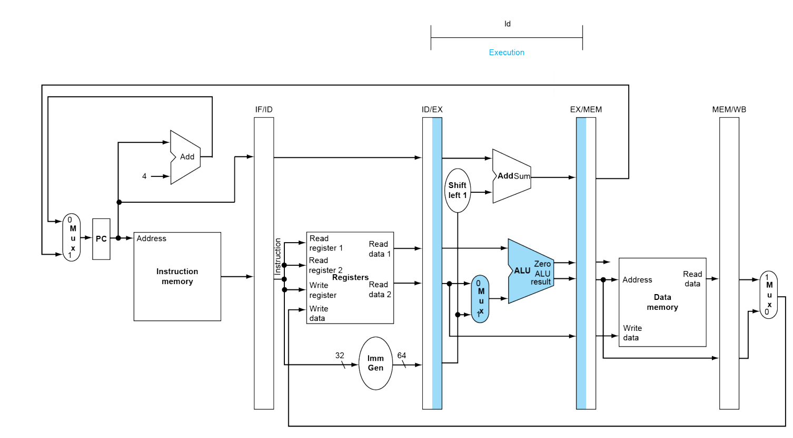
-
周期4 (MEM):
- 有效地址从EX/MEM寄存器送入数据存储器。
MemRead=1，数据存储器被读取，数据出现在其输出端口。- 在时钟上升沿，读出的数据、传来的ALU结果（虽然
ld不用，但也要传递）、rd字段等被写入MEM/WB寄存器。 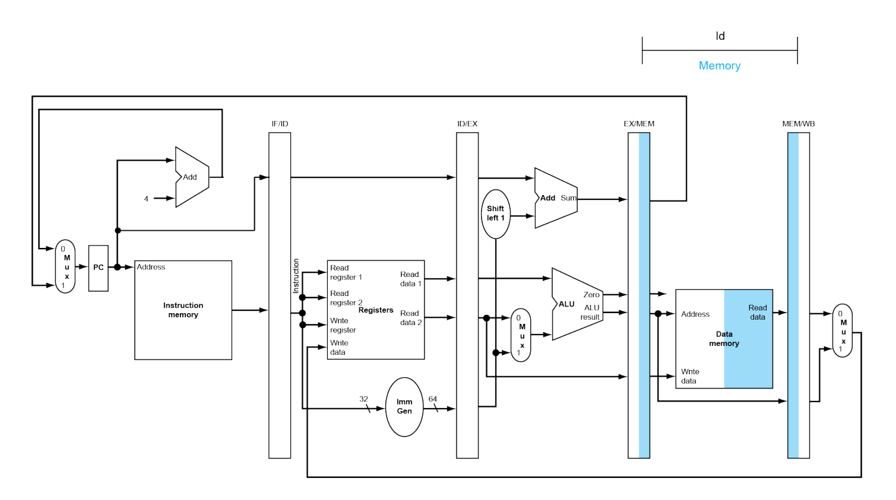
-
周期5 (WB):
- MEM/WB寄存器中的信息被用于最后的写回操作。
MemtoReg=1，MUX选择从内存读出的数据。RegWrite=1，数据被写入rd字段指定的寄存器。 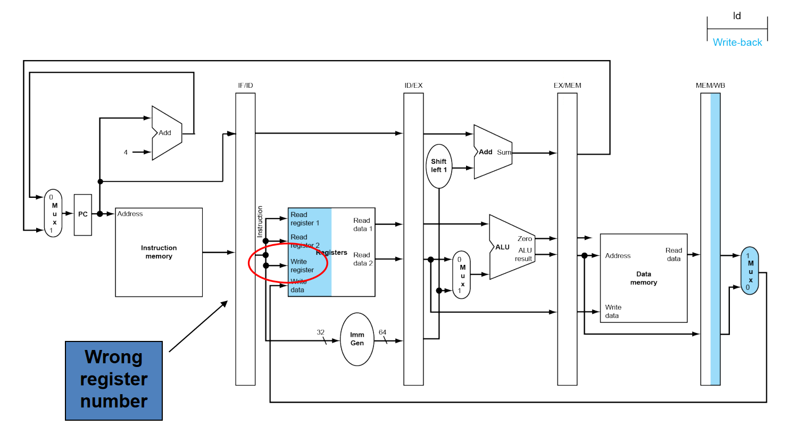
正确的连接应该是将MEM/WB寄存器中保存的rd字段连接到寄存器堆的写地址端口。
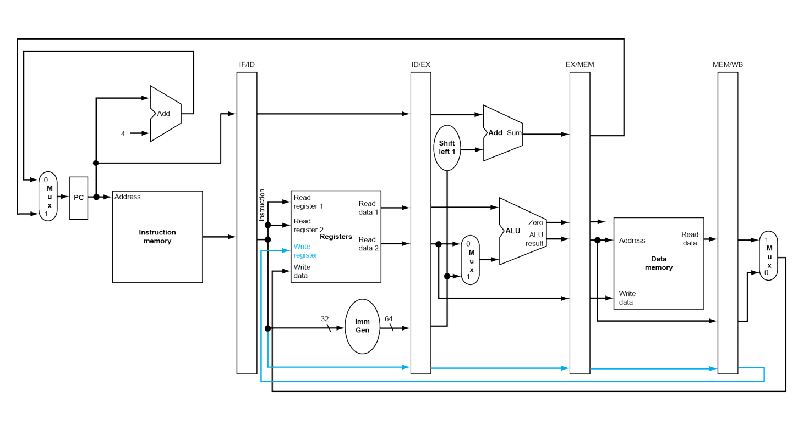
这个例子生动地说明了信息结伴而行这一流水线设计的黄金法则。
第二部分：数据冒险的硬件解决方案：数据前递
我们已经知道，数据前递是解决数据冒险的关键。现在，我们要设计实现它的硬件逻辑。
2.1 识别前递的需求
前递的本质是：当前EX阶段需要的操作数，是否刚刚被前面指令的EX或MEM阶段计算出来？
我们需要比较：
- 当前指令(在EX阶段)的源寄存器号(rs1, rs2)
- 前一条指令(在MEM阶段)的目标寄存器号(rd)
- 前前条指令(在WB阶段)的目标寄存器号(rd)
这些寄存器号，都保存在流水线寄存器中：
- 当前指令的源寄存器号：
ID/EX.RegisterRs1,ID/EX.RegisterRs2 - 前一条指令的目标寄存器号：
EX/MEM.RegisterRd - 前前条指令的目标寄存器号：
MEM/WB.RegisterRd
前递条件：
- EX冒险 (从MEM阶段前递到EX阶段):
if (EX/MEM.RegWrite and (EX/MEM.RegisterRd ≠ 0) and (EX/MEM.RegisterRd == ID/EX.RegisterRs1))则ForwardA = 10if (EX/MEM.RegWrite and (EX/MEM.RegisterRd ≠ 0) and (EX/MEM.RegisterRd == ID/EX.RegisterRs2))则ForwardB = 10
- MEM冒险 (从WB阶段前递到EX阶段):
if (MEM/WB.RegWrite and (MEM/WB.RegisterRd ≠ 0) and (MEM/WB.RegisterRd == ID/EX.RegisterRs1))则ForwardA = 01if (MEM/WB.RegWrite and (MEM/WB.RegisterRd ≠ 0) and (MEM/WB.RegisterRd == ID/EX.RegisterRs2))则ForwardB = 01
注意事项：
- 必须检查
RegWrite信号，因为sd或beq这类不写寄存器的指令，即使rd字段碰巧相同，也不需要前递。 - 必须检查
rd ≠ 0，因为x0寄存器永远是0，不能被写入，所以也不存在对x0的依赖。
2.2 处理“双重数据冒险”
考虑这个序列：
add x1, x1, x2 // 指令1
add x1, x1, x3 // 指令2
add x1, x1, x4 // 指令3
当指令3在EX阶段时，指令2在MEM阶段，指令1在WB阶段。指令3的源操作数x1，与指令1和指令2的目标x1都匹配。我们应该从哪里前递？
原则：总是使用最新的数据。 指令2的结果比指令1的结果更新。因此，我们应该从MEM阶段（指令2）前递，而不是WB阶段（指令1）。
修正后的MEM冒险逻辑： 我们需要在MEM冒险的判断条件中，加入一个“排除条款”：仅当不存在EX冒险时，才考虑MEM冒险。
if (MEM/WB.RegWrite and ... and (MEM/WB.RegisterRd == ID/EX.RegisterRs1) and NOT(EX冒险条件 for Rs1))则ForwardA = 01
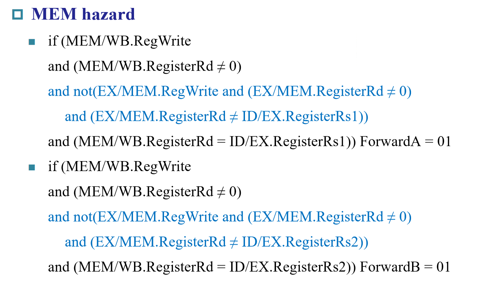
2.3 构建前递数据通路
硬件实现非常直观：
- 在ALU的两个输入端前，各放置一个3选1的MUX。
00输入：来自ID/EX寄存器（正常路径）。01输入：来自MEM/WB寄存器中的写回数据（MEM冒险前递路径）。10输入：来自EX/MEM寄存器中的ALU结果（EX冒险前递路径）。
- 设计一个前递单元 (Forwarding Unit)。它是一个组合逻辑块，输入是
ID/EX,EX/MEM,MEM/WB中的相关寄存器号和控制信号，输出是控制这两个新MUX的ForwardA和ForwardB信号。
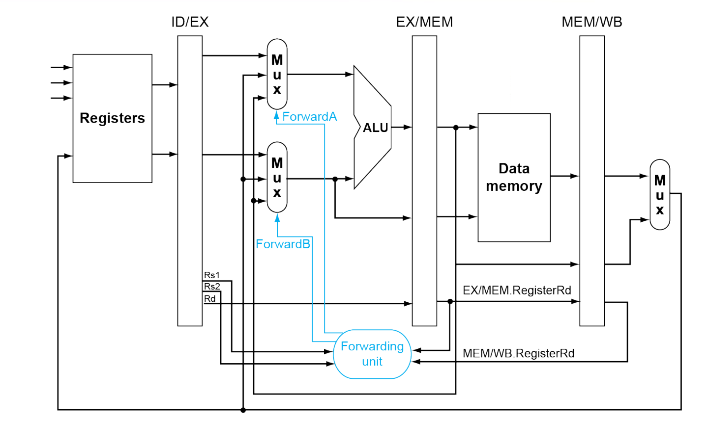 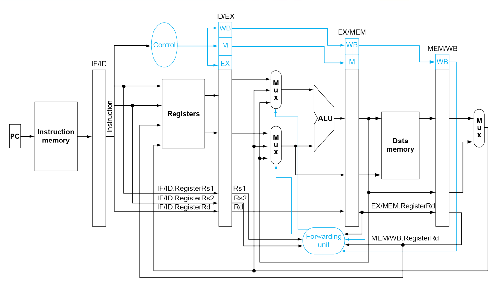
第三部分：处理Load-Use冒险：暂停流水线
数据前递无法解决Load-Use冒险，我们必须引入暂停 (Stall) 机制。
3.1 冒险检测
暂停的检测逻辑必须在ID阶段完成，因为我们需要在指令进入EX阶段之前阻止它。
- Load-Use冒险发生条件 (在ID阶段检测)：
if (ID/EX.MemRead and ((ID/EX.RegisterRd == IF/ID.RegisterRs1) or (ID/EX.RegisterRd == IF/ID.RegisterRs2)))- 解读：如果ID/EX流水线寄存器中的指令是一条
load指令（由MemRead=1判断），并且它要写入的寄存器Rd，正是当前IF/ID寄存器中的指令（即下一条指令）要读取的源寄存器Rs1或Rs2。
3.2 如何实现暂停
当冒险检测单元 (Hazard Detection Unit) 在ID阶段检测到Load-Use冒险时，它需要同时做两件事来让流水线暂停一周期：
-
“冻结”前半部分流水线：
- 阻止PC更新：向控制PC写入的逻辑发出一个信号，使其保持原值。
- 阻止IF/ID寄存器更新：禁止IF/ID寄存器的写入。
- 效果：这样，在下一个时钟周期，PC不会增加，IF/ID寄存器也保持不变。结果就是，当前在ID阶段的指令会“重新被译码”，而当前在IF阶段的指令会“重新被取指”。前半段流水线仿佛“时间倒流”了一个周期。
-
在后半部分流水线中插入一个“气泡 (Bubble)”：
- 清空ID/EX寄存器：强制将送往ID/EX寄存器的所有控制信号清零。
- 效果：在下一个周期，EX阶段接收到的控制信号全为0（例如
RegWrite=0,MemWrite=0），这相当于执行了一条NOP (No-Operation) 指令。这个NOP会像一个气泡一样，在后续的流水线中继续向后传递，占据一个指令的位置，从而为前面的ld指令腾出时间。
总结暂停机制：PC和IF/ID保持不变，同时向ID/EX注入NOP。
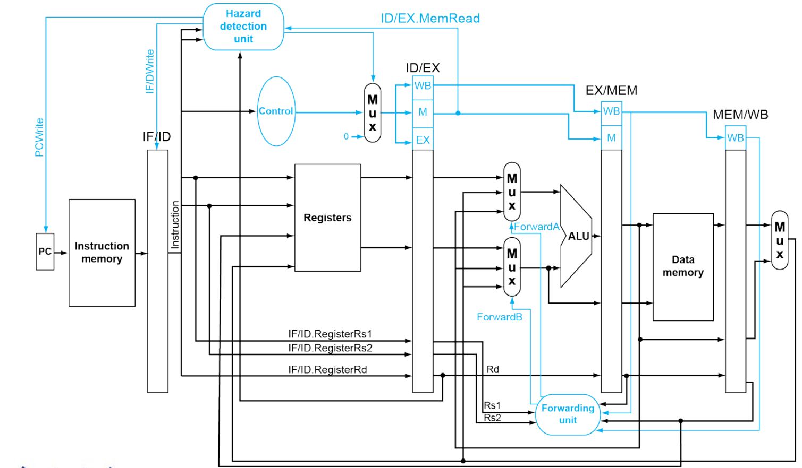
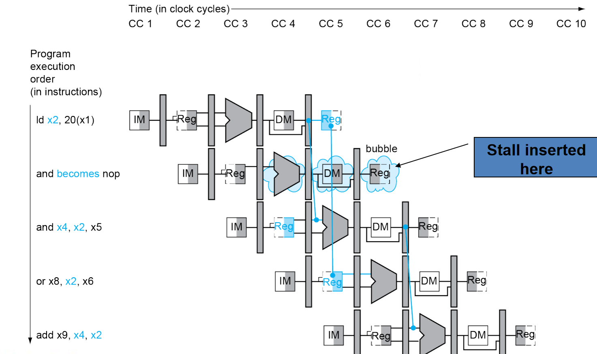
第四部分：控制冒险的硬件解决方案
分支指令是流水线的另一大性能杀手。我们的目标是尽早确定分支结果，减少冲刷带来的损失。
4.1 提前分支决策
在基础的5级流水线中，分支决策在EX阶段完成，这导致了2个周期的惩罚（因为IF和ID阶段已经取了两条错误路径的指令）。
优化思路：将分支决策硬件前移到ID阶段。
- 在ID阶段增加一个专用加法器，用于计算分支目标地址 (
IF/ID.PC+4 + (sign-extended immediate << 1))。 - 在ID阶段直接访问寄存器堆，并将读出的两个操作数送入一个专用比较器（或者一个简化的ALU）。
- 结果：在ID阶段结束时，我们就能知道分支是否跳转以及目标地址。这样，如果发生分支，我们只需要冲刷掉IF阶段正在取的那一条指令即可，分支惩罚从2个周期降低到1个周期。
4.2 实现流水线冲刷 (Flush)
当ID阶段确定分支跳转发生时（且我们的预测是“不跳转”），我们需要冲刷掉错误取入的指令。
- 如何冲刷？ 与插入气泡类似，我们可以利用控制信号。当ID阶段检测到分支跳转时，向IF阶段的控制逻辑发出一个
IF.Flush信号。 - 这个信号会使IF/ID寄存器在下一个时钟周期被写入一个全0的指令，这在RISC-V中通常被硬件识别为NOP。
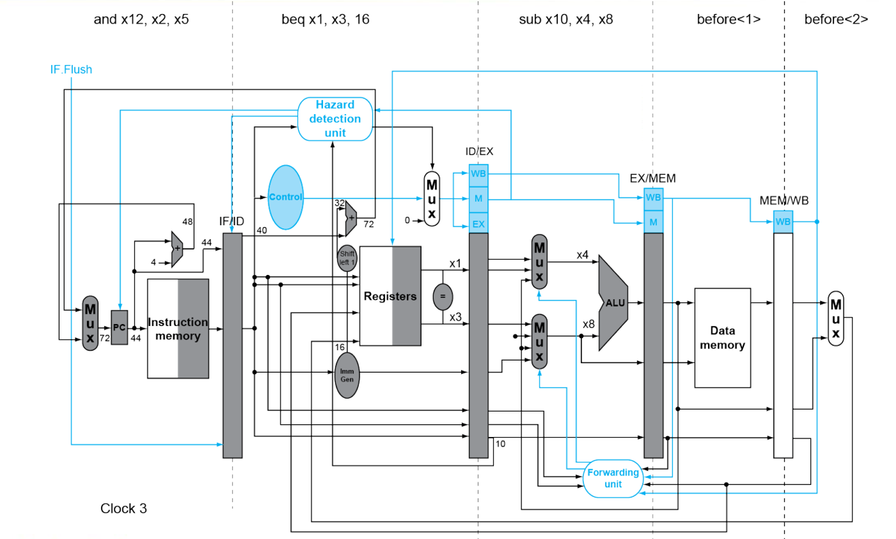
4.3 动态分支预测的深化
对于更深的流水线，1个周期的惩罚仍然难以接受。这就需要更强大的动态分支预测技术。
- 分支目标缓冲 (Branch Target Buffer, BTB)：一个小型、高速的Cache，由PC索引。它存储了两样东西：(1) 这条PC地址上的指令是否是分支；(2) 如果是，它上一次跳转的目标地址是什么。
- 工作流程：在IF阶段，用当前PC查询BTB。如果命中，我们不仅知道了这是一条分支指令，还立即获得了预测的目标地址，可以直接用这个地址去取下一条指令，从而实现0周期惩罚的跳转。
- 分支历史表 (Branch History Table, BHT)：与BTB协同工作，存储了分支的预测状态（例如，使用2位饱和计数器）。BTB告诉我们“去哪儿”，BHT告诉我们“去不去”。
- 预测错误的代价：如果动态预测失败，处理器必须冲刷掉所有在错误路径上已经进入流水线的指令，这个惩罚在现代深度流水线中可能高达十几个周期。因此，预测的准确率至关重要。
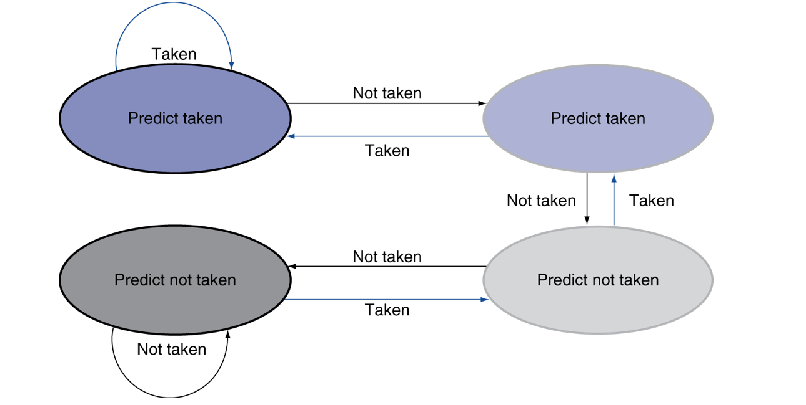
第五部分：处理异常与中断
一个健壮的处理器不仅要能正确执行程序，还要能优雅地处理各种“意外”。
- 异常 (Exception)：来自CPU内部的意外事件。如：未定义指令、算术溢出、访存地址越界。
- 中断 (Interrupt)：来自CPU外部I/O设备的信号。如：键盘输入、网络包到达。
从处理器的角度看，它们都属于控制流的突变，因此可以看作一种特殊的控制冒险。
处理流程：
- 保存现场：
- 将导致异常的指令的PC地址存入一个专用的异常程序计数器 (SEPC)。
- 将异常的原因（如“未定义指令”的代码是2）存入一个专用的异常原因寄存器 (SCAUSE)。
- 跳转到处理程序：强制将PC设置为一个预先定义好的异常/中断处理程序的入口地址。
- 处理：操作系统接管，执行相应的处理代码。
- 返回：如果异常可以恢复，处理程序会执行一条特殊指令，将SEPC的值恢复到PC，程序从异常发生处继续（或下一条指令）执行。
在流水线中处理异常：
- 挑战：异常可能在不同阶段发生（例如，IF阶段的访存错误，EX阶段的算术溢出，MEM阶段的访存错误）。由于流水线的并行性，当一条指令在EX阶段发生异常时，前面和后面的指令可能都处于执行过程中。
- 精确异常 (Precise Exceptions)：这是现代处理器的要求。即，当异常发生时，所有在异常指令之前的指令都必须完整执行完毕，而所有在异常指令之后（包括异常指令本身）的指令都必须像从未执行过一样被冲刷掉。
- 实现：
- 当一个阶段检测到异常，它不会立即处理，而是将异常信息（如一个标志位）存入流水线寄存器，随指令一起向下传递。
- 直到指令到达WB阶段的提交点，如果该指令携带了异常标志，处理器才会停止取指，冲刷整个流水线，保存现场，并跳转到处理程序。这确保了状态的精确性。
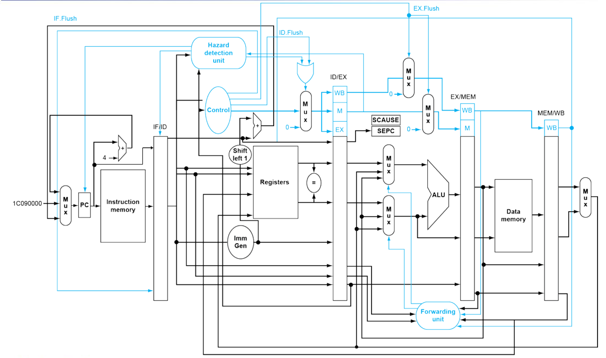
总结
我们完成了从流水线理论到实践的跨越。我们亲手构建了RISC-V的五级流水线数据通路，并为其配备了处理数据冒险（前递、暂停）和控制冒险（提前决策、冲刷）的复杂控制逻辑，还探讨了异常处理机制。
我们所构建的，是一个经典的、静态的、顺序执行的流水线。它是所有现代高性能处理器的起点。
然而，性能的追求是无止境的。仅仅每个周期完成一条指令还不够快。计算机架构师们很快就提出了更激进的思想，统称为指令级并行 (Instruction-Level Parallelism, ILP)，我们将在未来深入探讨：
- 超流水线 (Super-pipelining)：将流水线级数做得更深（如20级、30级），进一步缩短时钟周期。
- 超标量 (Superscalar) / 多发射 (Multiple Issue)：每个时钟周期发射并执行多于一条指令。这需要复制多套执行单元，并由硬件（动态调度）或编译器（静态调度，如VLIW）来解决更复杂的资源和数据依赖问题。
- 乱序执行 (Out-of-Order Execution)：允许指令不按程序顺序执行，只要数据依赖得到满足。这可以极大地掩盖由Cache Miss等引起的延迟，是现代高性能CPU的核心。
- 推测执行 (Speculative Execution)：在分支结果或内存地址确定之前，就大胆地沿着预测的路径执行下去，并将结果暂存。如果预测正确，就获得巨大性能收益；如果错误，就回滚状态。